计算机网络
2018.02.28
第一章 概述
网络的网络
网络把主机连接起来，而互联网是把多种不同的网络连接起来，因此互联网是网络的网络。
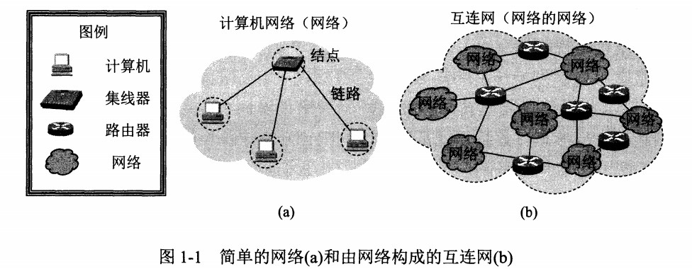
ISP
互联网服务提供商 ISP 可以从互联网管理机构获得许多 IP 地址，同时拥有通信线路以及路由器等联网设备，个人或机构向 ISP 缴纳一定的费用就可以接入互联网。
目前的互联网是一种多层次 ISP 结构，ISP 根据覆盖面积的大小分为主干 ISP、地区 ISP 和本地 ISP。
互联网交换点 IXP 允许两个 ISP 直接相连而不用经过第三个 ISP。
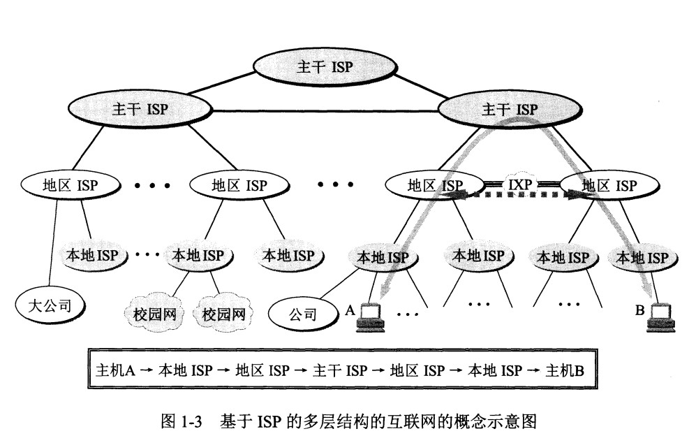
互联网的组成
- 边缘部分：所有连接在互联网上的主机，用户可以直接使用；
- 核心部分：由大量的网络和连接这些网络的路由器组成，为边缘部分的主机提供服务。
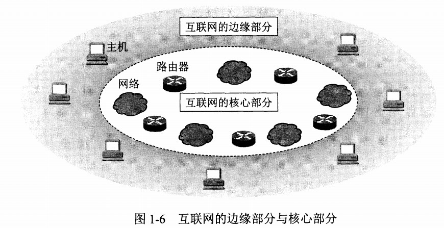
主机之间的通信方式
1. 客户 - 服务器（C/S）
客户即是服务请求方，服务器是服务提供方。
2. 对等（P2P）
不区分客户和服务器。
电路交换与分组交换
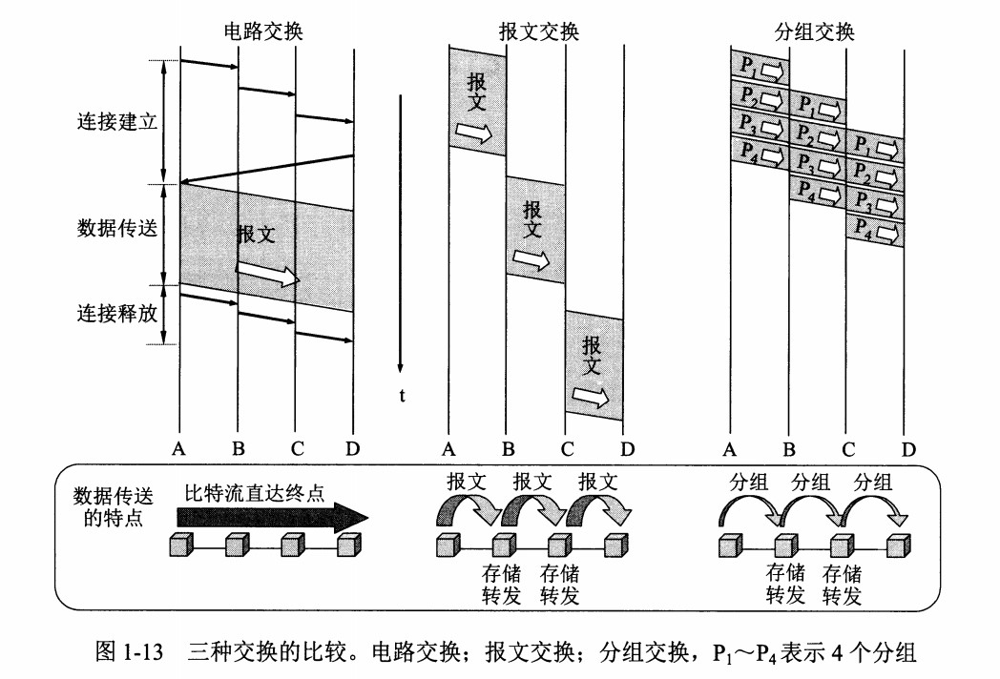
1. 电路交换
电路交换用于电话通信系统，两个用户要通信之前需要建立一条专用的物理链路，并且在整个通信过程中始终占用该链路。由于通信的过程中不可能一直在使用传输线路，因此电路交换对线路的利用率很低，往往不到 10%。
2. 报文交换
报文交换用于邮局通信系统，邮局接收到一份报文之后，先存储下来，然后把相同目的地的报文一起转发到下一个目的地，这个过程就是存储转发过程。
3. 分组交换
分组交换也使用了存储转发，但是转发的是分组而不是报文。把整块数据称为一个报文，由于一个报文可能很长，需要先进行切分，来满足分组能处理的大小。在每个切分的数据前面加上首部之后就成为了分组，首部包含了目的地址和源地址等控制信息。
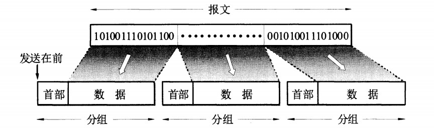
存储转发允许在一条传输线路上传送多个主机的分组，因此不需要占用端到端的线路资源。
相比于报文交换，由于分组比报文更小，存储转发的速度也就更快。
时延
总时延 = 发送时延 + 传播时延 + 处理时延 + 排队时延
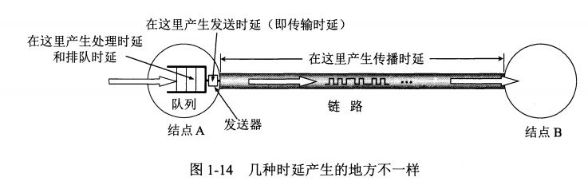
1. 发送时延
主机或路由器发送数据帧所需要的时间。
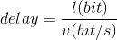
其中 l 表示数据帧的长度，v 表示发送速率。
2. 传播时延
电磁波在信道中传播一定的距离需要花费的时间，电磁波传播速度接近光速。
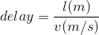
其中 l 表示信道长度，v 表示电磁波在信道上的传播速率。
3. 处理时延
主机或路由器收到分组时进行处理所需要的时间，例如分析首部，从分组中提取数据部分等。
4. 排队时延
分组在路由器的输入队列和输出队列中排队等待的时间，取决于网络当前的通信量。
计算机网络体系结构*

1. 七层协议
如图 a 所示，其中表示层和会话层用途如下：
- 表示层：信息的语法语义以及它们的关联，如加密解密、转换翻译、压缩解压缩；
- 会话层：不同机器上的用户之间建立及管理会话。
2. 五层协议
-
应用层：为特定应用程序提供数据传输服务，例如 HTTP、DNS 等。数据单位为报文。
-
运输层：提供的是进程间的通用数据传输服务。由于应用层协议很多，定义通用的运输层协议就可以支持不断增多的应用层协议。运输层包括两种协议：传输控制协议 TCP，提供面向连接、可靠的数据传输服务，数据单位为报文段；用户数据报协议 UDP，提供无连接、尽最大努力的数据传输服务，数据单位为用户数据报。TCP 主要提供完整性服务，UDP 主要提供及时性服务。
-
网络层：为主机之间提供服务，而不是像运输层协议那样是为主机中的进程提供服务。网络层把运输层产生的报文段或者用户数据报封装成分组来进行传输。
-
数据链路层：网络层针对的还是主机之间，而主机之间可以有很多链路，链路层协议就是为相邻结点之间提供服务。数据链路层把网络层传来的分组封装成帧。
- 物理层：考虑的是怎样在传输媒体上传输数据比特流，而不是指具体的传输媒体。物理层的作用是尽可能屏蔽传输媒体和通信手段的差异，使物理层上的数据链路层感觉不到这些差异。
3. 数据在各层之间的传递过程
在向下的过程中，需要添加下层协议所需要的首部或者尾部，而在向上的过程中不断拆开首部和尾部。
路由器只有下面三层协议，因为路由器位于网络核心中，不需要为进程或者应用程序提供服务，因此也就不需要运输层和应用层。
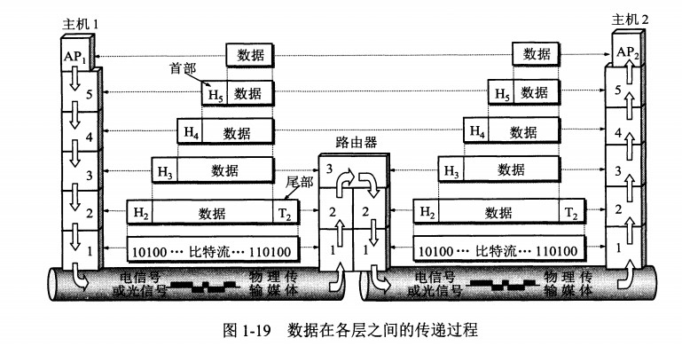
4. TCP/IP 体系结构
它只有四层，相当于五层协议中数据链路层和物理层合并为网络接口层。
现在的 TCP/IP 体系结构不严格遵循 OSI 分层概念，应用层可能会直接使用 IP 层或者网络接口层。
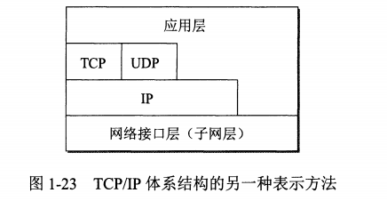
TCP/IP 协议族是一种沙漏形状，中间小两边大，IP 协议在其中占用举足轻重的地位。
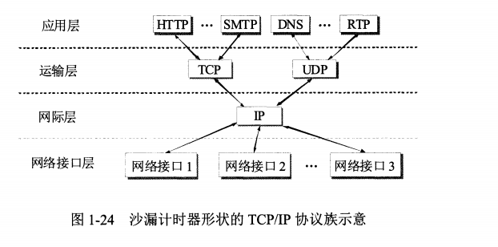
第二章 物理层
通信方式
- 单向通信，又称为单工通信；
- 双向交替通信，又称为半双工通信；
- 双向同时通信，又称为全双工通信。
带通调制
模拟信号是连续的信号，数字信号是离散的信号。带通调制把数字信号转换为模拟信号。
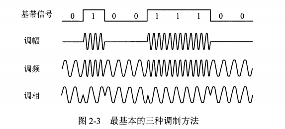
信道复用技术
1. 频分复用、时分复用
频分复用的所有用户在相同的时间占用不同的频率带宽资源；时分复用的所有用户在不同的时间占用相同的频率带宽资源。
使用这两种方式进行通信，在通信的过程中用户会一直占用一部分信道资源。但是由于计算机数据的突发性质，没必要一直占用信道资源而不让出给其它用户使用，因此这两种方式对信道的利用率都不高。
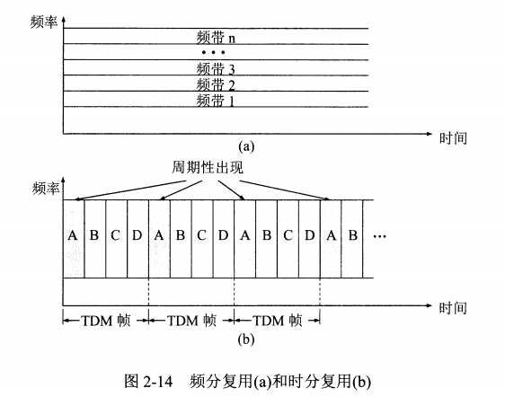
2. 统计时分复用
是对时分复用的一种改进，不固定每个用户在时分复用帧中的位置，只要有数据就集中起来组成时分复用帧然后发送。
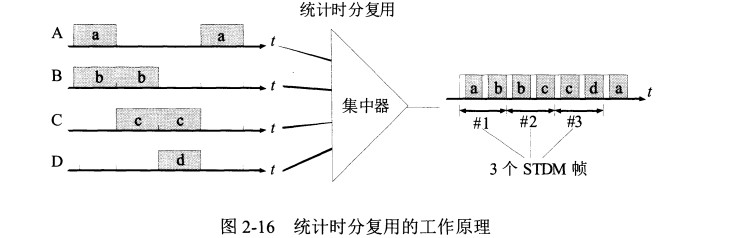
3. 波分复用
光的频分复用。由于光的频率很高，因此习惯上用波长而不是频率来表示所使用的光载波。
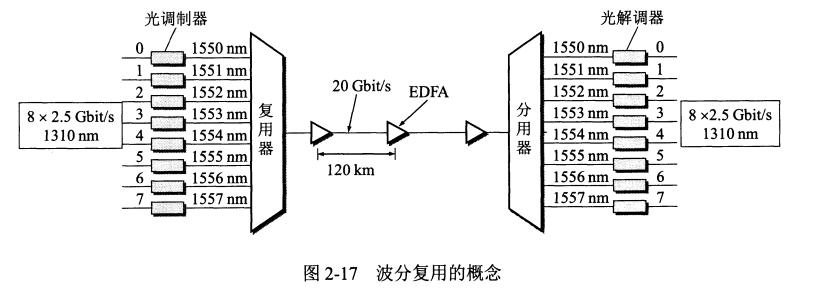
4. 码分复用
为每个用户分配 m bit 的码片，并且所有的码片正交，对于任意两个码片 $\vec{S}$ 和 $\vec{T}$ 有
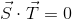
为了方便，取 m=8，设码片 $\vec{S}$ 为 00011011。在拥有该码片的用户发送比特 1 时就发送该码片，发送比特 0 时就发送该码片的反码 11100100。
在计算时将 00011011 记作 (-1 -1 -1 +1 +1 -1 +1 +1)，可以得到

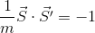
其中 $\vec{S'}$ 为 $\vec{S}$ 的反码。
利用上面的式子我们知道，当接收端使用码片 $\vec{S}$ 对接收到的数据进行内积运算时，结果为 0 的是其它用户发送的数据，结果为 1 的是用户发送的比特 1，结果为 -1 的是用户发送的比特 0。
码分复用需要发送的数据量为原先的 m 倍。
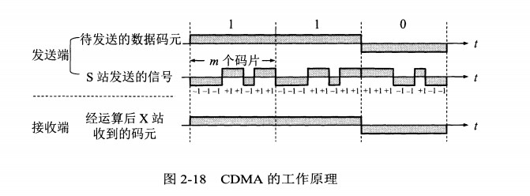
第三章 数据链路层
三个基本问题
1. 封装成帧
将网络层传下来的分组添加首部和尾部，用于标记帧的开始和结束。
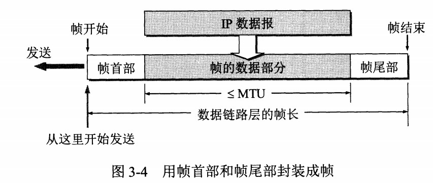
2. 透明传输
透明表示一个实际存在的事物看起来好像不存在一样。
帧中有首部和尾部，如果帧的数据部分含有和首部尾部相同的内容，那么帧的开始和结束位置就会被错误的判定。需要在数据中出现首部尾部相同的内容前面插入转义字符，如果需要传输的内容正好就是转义字符，那么就在转义字符前面再加个转义字符，在接收端进行处理之后可以还原出原始数据。这个过程透明传输的内容是转义字符，用户察觉不到转义字符的存在。
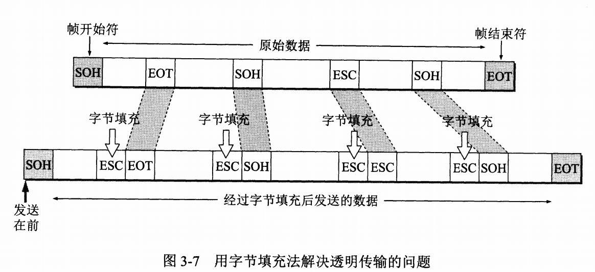
3. 差错检测
目前数据链路层广泛使用了循环冗余检验（CRC）来检查比特差错。
除了 CRC，还有的检验方法比如：
- 奇偶校验：添加 1 位使 1 的位数为奇数或偶数，更进一步的二维奇偶校验方法，不但可以检错还可以纠错部分错误。
- 检验和方法：具体参考 UDP 检验和计算方法；
点对点信道 - PPP 协议
互联网用户通常需要连接到某个 ISP 之后才能接入到互联网，PPP 协议就是用户计算机和 ISP 进行通信时所使用的数据链路层协议。
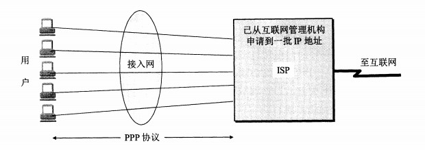
在 PPP 的帧中，F 字段为帧的定界符，A 和 C 暂时没有意义。FCS 是使用 CRC 的检验序列。信息部分的长度不超过 1500。
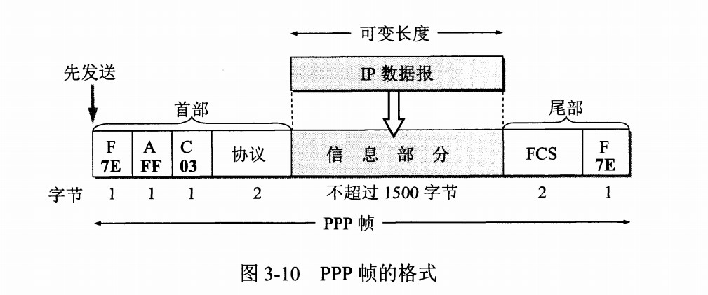
局域网的拓扑
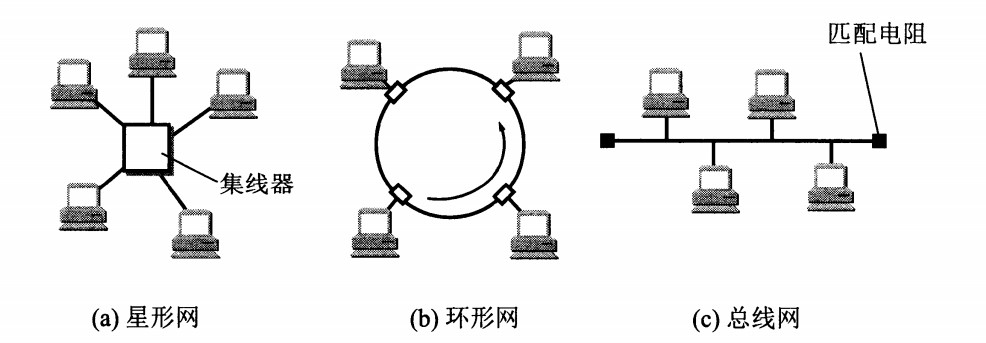
广播信道 - CSMA/CD 协议*
在广播信道上，同一时间只能允许一台计算机发送数据。
CSMA/CD 表示载波监听多点接入 / 碰撞检测。
- 多点接入：说明这是总线型网络，许多计算机以多点的方式连接到总线上。
- 载波监听：每个站都必须不停地检听信道。在发送前，如果检听信道正在使用，就必须等待。
- 碰撞检测：在发送中，如果检听信道已有其它站正在发送数据，就表示发生了碰撞。虽然每一个站在发送数据之前都已经检听信道为空闲，但是由于电磁波的传播时延的存在，还是有可能会发生碰撞。
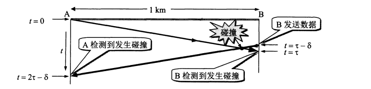
记端到端的传播时延为 τ，最先发送的站点最多经过 2τ 就可以知道是否发生了碰撞，称 2τ 为 争用期。只有经过争用期之后还没有检测到碰撞，才能肯定这次发送不会发生碰撞。
当发生碰撞时，站点要停止发送，等待一段时间再发送。这个时间采用 截断二进制指数退避算法 来确定，从离散的整数集合 {0, 1, .., (2k-1)} 中随机取出一个数，记作 r，然后取 r 倍的争用期作为重传等待时间。
集线器
从表面上看，使用集线器的局域网在物理上是一个星型网。但是集线器使用电子器件来模拟实际缆线的工作，逻辑上仍是一个总线网，整个系统仍像一个传统以太网那样运行。
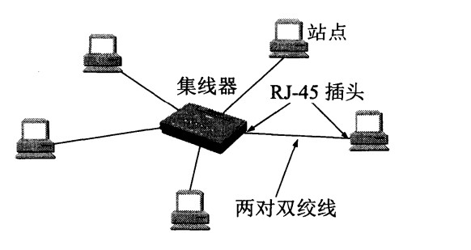
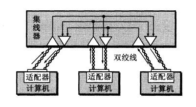
MAC 层
MAC 地址是 6 字节（48 位）的地址，用于唯一表示网络适配器（网卡），一台主机拥有多少个适配器就有多少个 MAC 地址，例如笔记本电脑普遍存在无线网络适配器和有线网络适配器。

- 类型：标记上层使用的协议；
- 数据：长度在 46-1500 之间，如果太小则需要填充；
- FCS：帧检验序列，使用的是 CRC 检验方法；
- 前同步码：只是为了计算 FCS 临时加入的，计算结束之后会丢弃。
虚拟局域网
虚拟局域网可以建立与物理位置无关的逻辑组，只有在同一个虚拟局域网中的成员才会收到链路层广播信息，例如下图中 (A1, A2, A3, A4) 属于一个虚拟局域网，A1 发送的广播会被 A2、A3、A4 收到，而其它站点收不到。

第四章 网络层*
网际协议 IP 概述
因为网络层是整个互联网的核心，因此应当让网络层尽可能简单。网络层向上只提供简单灵活的、无连接的、尽最大努力交互的数据报服务。
使用 IP 协议，可以把异构的物理网络连接起来，使得在网络层看起来好像是一个统一的网络。
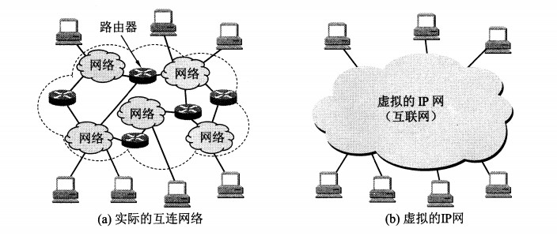
与 IP 协议配套使用的还有三个协议：
- 地址解析协议 ARP（Address Resolution Protocol）
- 网际控制报文协议 ICMP（Internet Control Message Protocol）
- 网际组管理协议 IGMP（Internet Group Management Protocol）
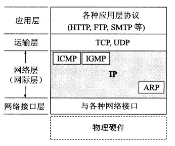
IP 数据报格式
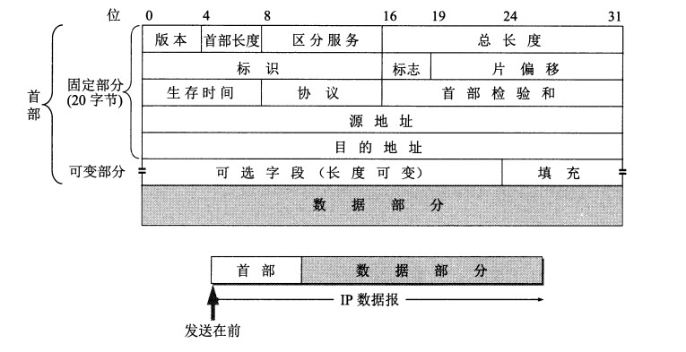
-
版本 : 有 4（IPv4）和 6（IPv6）两个值；
-
首部长度 : 占 4 位，因此最大值为 15。值为 1 表示的是 1 个 32 位字的长度，也就是 4 字节。因为首部固定长度为 20 字节，因此该值最小为 5。如果可选部分的长度不是 4 字节的整数倍，就用尾部的填充部分来填充。
-
区分服务 : 用来获得更好的服务，一般情况下不使用。
-
总长度 : 包括首部长度和数据部分长度。
-
标识 : 在数据报长度过长从而发生分片的情况下，相同数据报的不同分片具有相同的标识符。
- 片偏移 : 和标识符一起，用于发生分片的情况。片偏移的单位为 8 字节。
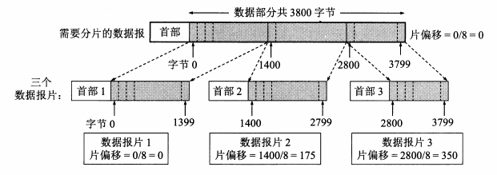
-
生存时间 ：TTL，它的存在是为了防止无法交付的数据报在互联网中不断兜圈子。以路由器跳数为单位，当 TTL 为 0 时就丢弃数据报。
-
协议：指出携带的数据应该上交给哪个协议进行处理，例如 ICMP、TCP、UDP 等。
- 首部检验和：因为数据报每经过一个路由器，都要重新计算检验和，因此检验和不包含数据部分可以减少计算的工作量。
IP 地址编址
IP 地址的编址方式经历了三个历史阶段：
- 分类；
- 子网划分；
- 无分类。
1. 分类
由两部分组成，网络号和主机号，其中不同类别具有不同的网络号长度，并且是固定的。
IP 地址 ::= {< 网络号 >, < 主机号 >}
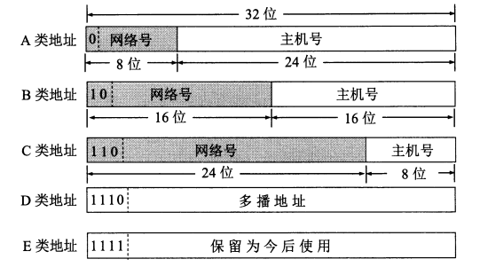
2. 子网划分
通过在网络号字段中拿一部分作为子网号，把两级 IP 地址划分为三级 IP 地址。注意，外部网络看不到子网的存在。
IP 地址 ::= {< 网络号 >, < 子网号 >, < 主机号 >}
要使用子网，必须配置子网掩码。一个 B 类地址的默认子网掩码为 255.255.0.0，如果 B 类地址的子网占两个比特，那么子网掩码为 11111111 11111111 11000000 000000，也就是 255.255.192.0。
3. 无分类
无分类编址 CIDR 消除了传统 A 类、B 类和 C 类地址以及划分子网的概念，使用网络前缀和主机号来对 IP 地址进行编码，网络前缀的长度可以根据需要变化。
IP 地址 ::= {< 网络前缀号 >, < 主机号 >}
CIDR 的记法上采用在 IP 地址后面加上网络前缀长度的方法，例如 128.14.35.7/20 表示前 20 位为网络前缀。
CIDR 的地址掩码可以继续称为子网掩码，子网掩码首 1 长度为网络前缀的长度。
一个 CIDR 地址块中有很多地址，一个 CIDR 表示的网络就可以表示原来的很多个网络，并且在路由表中只需要一个路由就可以代替原来的多个路由，减少了路由表项的数量。把这种通过使用网络前缀来减少路由表项的方式称为路由聚合，也称为 构成超网。
在路由表中的项目由“网络前缀”和“下一跳地址”组成，在查找时可能会得到不止一个匹配结果，应当采用最长前缀匹配来确定应该匹配哪一个。
IP 地址和 MAC 地址
网络层实现主机之间的通信，而链路层实现具体每段链路之间的通信。因此在通信过程中，IP 数据报的源地址和目的地址始终不变，而 MAC 地址随着链路的改变而改变。
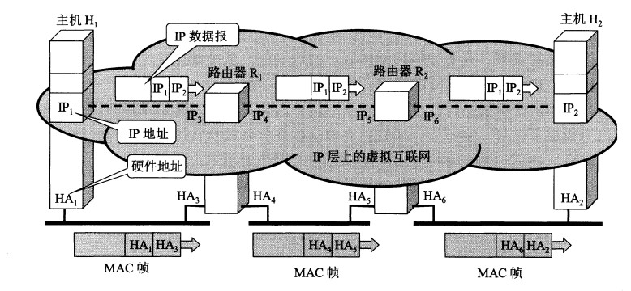
地址解析协议 ARP
实现由 IP 地址得到 MAC 地址。
每个主机都有一个 ARP 高速缓存，存放映射表。如果一个 IP 地址到 MAC 地址的映射不在该表中，主机通过广播的方式发送 ARP 请求分组，匹配 IP 地址的主机会发送 ARP 响应分组告知其 MAC 地址。
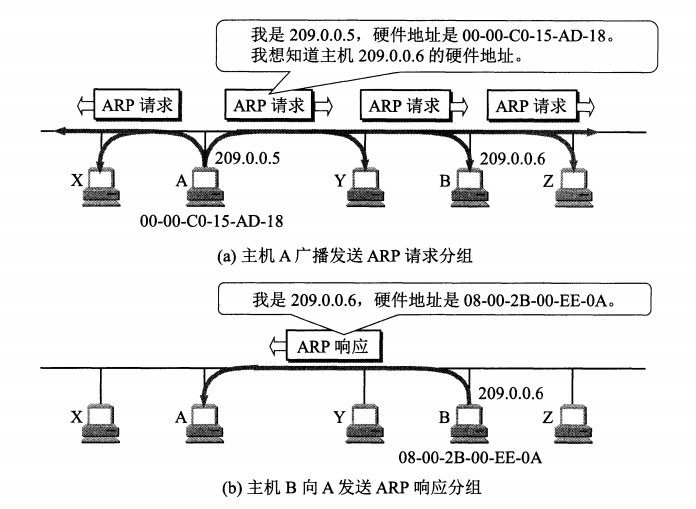
路由器的结构
路由器从功能上可以划分为两大部分：路由选择和分组转发。
分组转发部分由三部分组成：交换结构、一组输入端口和一组输出端口。
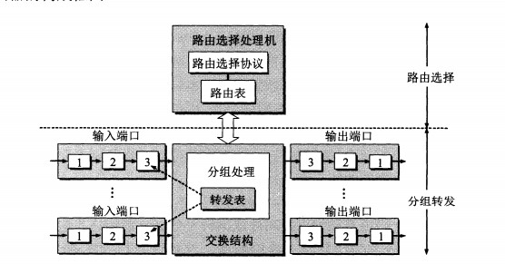
交换结构的交换网络有以下三种实现方式：
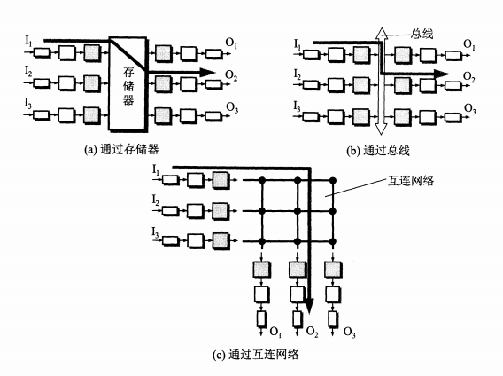
交换机与路由器的区别
- 交换机工作于数据链路层，能识别 MAC 地址，根据 MAC 地址转发链路层数据帧。具有自学机制来维护 IP 地址与 MAC 地址的映射。
- 路由器位于网络层，能识别 IP 地址并根据 IP 地址转发分组。维护着路由表，根据路由表选择最佳路线。
路由器分组转发流程
- 从数据报的首部提取目的主机的 IP 地址 D，得到目的网络地址 N。（路由表项是网络号而不是 IP 地址，这样做大大减少了路由表条目数量）
- 若 N 就是与此路由器直接相连的某个网络地址，则进行直接交付；
- 若路由表中有目的地址为 D 的特定主机路由，则把数据报传送给表中所指明的下一跳路由器；
- 若路由表中有到达网络 N 的路由，则把数据报传送给路由表中所指明的下一跳路由器；
- 若路由表中有一个默认路由，则把数据报传送给路由表中所指明的默认路由器；
- 报告转发分组出错。
路由选择协议
互联网使用的路由选择协议都是自适应的，能随着网络通信量和拓扑结构的变化而自适应地进行调整。
互联网可以划分为许多较小的自治系统 AS，一个 AS 可以使用一种和别的 AS 不同的路由选择协议。
可以把路由选择协议划分为两大类：
- 内部网关协议 IGP（Interior Gateway Protocol）：在 AS 内部使用，如 RIP 和 OSPF。
- 外部网关协议 EGP（External Gateway Protocol）：在 AS 之间使用，如 BGP。
1. 内部网关协议 RIP
RIP 是一种分布式的基于距离向量的路由选择协议。距离是指跳数，直接相连的路由器跳数为 1，跳数最多为 15，超过 15 表示不可达。
RIP 按固定的时间间隔仅和相邻路由器交换自己的路由表，经过若干次交换之后，所有路由器最终会知道到达本自治系统中任何一个网络的最短距离和下一跳路由器地址。
距离向量算法：
- 对地址为 X 的相邻路由器发来的 RIP 报文，先修改报文中的所有项目，把下一跳字段中的地址改为 X，并把所有的距离字段加 1；
- 对修改后的 RIP 报文中的每一个项目，进行以下步骤：
- 若原来的路由表中没有目的网络 N，则把该项目添加到路由表中；
- 否则：若下一跳路由器地址是 X，则把收到的项目替换原来路由表中的项目；否则：若收到的项目中的距离 d 小于路由表中的距离，则进行更新（例如原始路由表项为 Net2, 5, P，新表项为 Net2, 4, X，则更新）；否则什么也不做。
- 若 3 分钟还没有收到相邻路由器的更新路由表，则把该相邻路由器标为不可达，即把距离置为 16。
RIP 协议实现简单，开销小，但是 RIP 能使用的最大距离为 15，限制了网络的规模。并且当网络出现故障时，要经过比较长的时间才能将此消息传送到所有路由器。
2. 内部网关协议 OSPF
开放最短路径优先 OSPF，是为了克服 RIP 的缺点而开发出来的。
开放表示 OSPF 不受某一家厂商控制，而是公开发表的；最短路径优先表示使用了 Dijkstra 提出的最短路径算法 SPF。
OSPF 具有以下特点：
- 向本自治系统中的所有路由器发送信息，这种方法是洪泛法。
- 发送的信息就是与相邻路由器的链路状态，链路状态包括与哪些路由器相连以及链路的度量，度量用费用、距离、时延、带宽等来表示。
- 只有当链路状态发生变化时，路由器才会发送信息。
所有路由器都具有全网的拓扑结构图，并且是一致的。相比于 RIP，OSPF 的更新过程收敛的很快。
3. 外部网关协议 BGP
AS 之间的路由选择很困难，主要是互联网规模很大。并且各个 AS 内部使用不同的路由选择协议，就无法准确定义路径的度量。并且 AS 之间的路由选择必须考虑有关的策略，比如有些 AS 不愿意让其它 AS 经过。
BGP 只能寻找一条比较好的路由，而不是最佳路由。它采用路径向量路由选择协议。
每个 AS 都必须配置 BGP 发言人，通过在两个相邻 BGP 发言人之间建立 TCP 连接来交换路由信息。
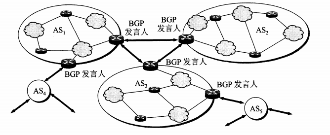
网际控制报文协议 ICMP
ICMP 是为了更有效地转发 IP 数据报和提高交付成功的机会。它封装在 IP 数据报中，但是不属于高层协议。
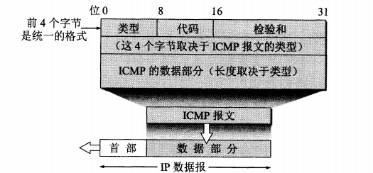
ICMP 报文分为差错报告报文和询问报文。
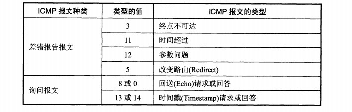
分组网间探测 PING
PING 是 ICMP 的一个重要应用，主要用来测试两台主机之间的连通性。
PING 的过程：
- PING 同一个网段的主机：查找目的主机的 MAC 地址，然后直接交付。如果无法查找到 MAC 地址，就要进行一次 ARP 请求。
- PING 不同网段的主机：发送到网关让其进行转发。同样要发送到网关也需要通过查找网关的 MAC 地址，根据 MAC 地址进行转发。
IP 多播
在一对多的通信中，多播不需要将分组复制多份，从而大大节约网络资源。
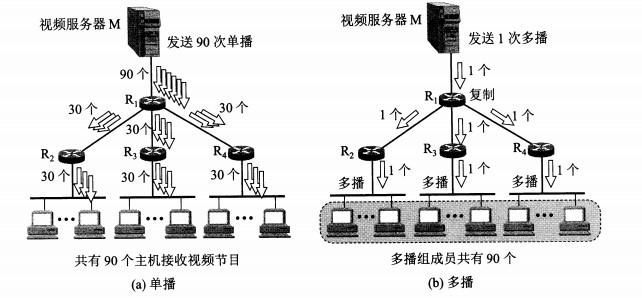
虚拟专用网 VPN
由于 IP 地址的紧缺，一个机构能申请到的 IP 地址数往往远小于本机构所拥有的主机数。并且一个机构并不需要把所有的主机接入到外部的互联网中，机构内的计算机可以使用仅在本机构有效的 IP 地址（专用地址）。
有三个专用地址块：
- 10.0.0.0 \~ 10.255.255.255
- 172.16.0.0 \~ 172.31.255.255
- 192.168.0.0 \~ 192.168.255.255
VPN 使用公用的互联网作为本机构各专用网之间的通信载体。专用指机构内的主机只与本机构内的其它主机通信；虚拟指“好像是”，而实际上并不是，它有经过公用的互联网。
下图中，场所 A 和 B 的通信部经过互联网，如果场所 A 的主机 X 要和另一个场所 B 的主机 Y 通信，IP 数据报的源地址是 10.1.0.1，目的地址是 10.2.0.3。数据报先发送到与互联网相连的路由器 R1，R1 对内部数据进行加密，然后重新加上数据报的首部，源地址是路由器 R1 的全球地址 125.1.2.3，目的地址是路由器 R2 的全球地址 194.4.5.6。路由器 R2 收到数据报后将数据部分进行解密，恢复原来的数据报，此时目的地址为 10.2.0.3，就交付给 Y。
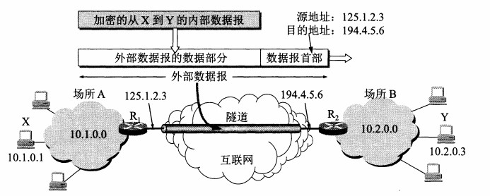
网络地址转换 NAT
专用网内部的主机使用本地 IP 地址又想和互联网上的主机通信时，可以使用 NAT 来将本地 IP 转换为全球 IP。
在以前，NAT 将本地 IP 和全球 IP 一一对应，这种方式下拥有 n 个全球 IP 地址的专用网内最多只可以同时有 n 台主机接入互联网。为了更有效地利用全球 IP 地址，现在常用的 NAT 转换表把运输层的端口号也用上了，使得多个专用网内部的主机共用一个全球 IP 地址。使用端口号的 NAT 也叫做网络地址与端口转换 NAPT。
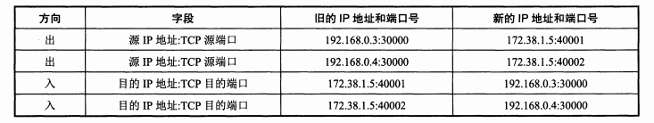
第五章 运输层*
网络层只把分组发送到目的主机，但是真正通信的并不是主机而是主机中的进程。
运输层提供了应用进程间的逻辑通信。运输层向高层用户屏蔽了下面网络层的核心细节，使应用程序看见的好像在两个运输层实体之间有一条端到端的逻辑通信信道。
UDP 和 TCP 的特点
-
用户数据包协议 UDP（User Datagram Protocol）是无连接的，尽最大可能交付，没有拥塞控制，面向报文（对于应用程序传下来的报文不合并也不拆分，只是添加 UDP 首部）。
- 传输控制协议 TCP（Transmission Control Protocol） 是面向连接的，提供可靠交付，有流量控制，拥塞控制，提供全双工通信，面向字节流（把应用层传下来的报文看成字节流，把字节流组织成大小不等的数据块）
UDP 首部格式
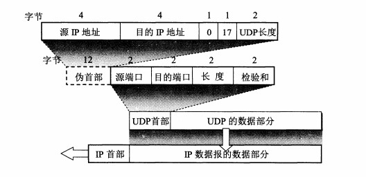
首部字段只有 8 个字节，包括源端口、目的端口、长度、检验和。12 字节的伪首部是为了计算检验和而临时添加的。
TCP 首部格式
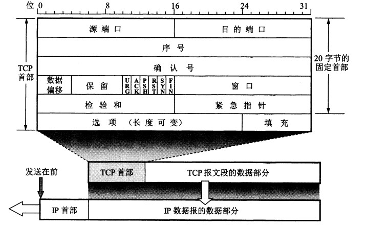
-
序号 ：用于对字节流进行编号，例如序号为 301，表示第一个字节的编号为 301，如果携带的数据长度为 100 字节，那么下一个报文段的序号应为 401。
-
确认号 ：期望收到的下一个报文段的序号。例如 B 正确收到 A 发送来的一个报文段，序号为 501，携带的数据长度为 200 字节，因此 B 期望下一个报文段的序号为 701，B 发送给 A 的确认报文段中确认号就为 701。
-
数据偏移 ：指的是数据部分距离报文段起始处的偏移量，实际上指的是首部的长度。
-
确认 ACK ：当 ACK=1 时确认号字段有效，否则无效。TCP 规定，在连接建立后所有传送的报文段都必须把 ACK 置 1。
-
同步 SYN ：在连接建立时用来同步序号。当 SYN=1，ACK=0 时表示这是一个连接请求报文段。若对方同意建立连接，则响应报文中 SYN=1，ACK=1。
-
终止 FIN ：用来释放一个连接，当 FIN=1 时，表示此报文段的发送方的数据已发送完毕，并要求释放运输连接。
- 窗口 ：窗口值作为接收方让发送方设置其发送窗口的依据。之所以要有这个限制，是因为接收方的数据缓存空间是有限的。
TCP 的三次握手
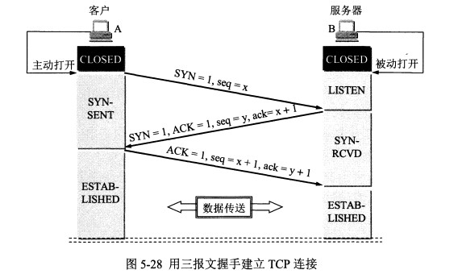
假设 A 为客户端，B 为服务器端。
- 首先 B 处于 LISTEN（监听）状态，等待客户的连接请求。
- A 向 B 发送连接请求报文段，SYN=1，ACK=0，选择一个初始的序号 x。
- B 收到连接请求报文段，如果同意建立连接，则向 A 发送连接确认报文段，SYN=1，ACK=1，确认号为 x+1，同时也选择一个初始的序号 y。
- A 收到 B 的连接确认报文段后，还要向 B 发出确认，确认号为 y+1，序号为 x+1。
- B 收到 A 的确认后，连接建立。
TCP 的四次挥手
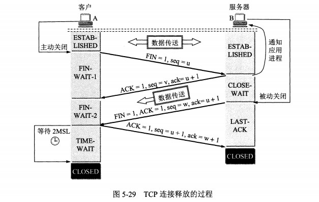
以下描述不讨论序号和确认号，因为序号和确认号的规则比较简单。并且不讨论 ACK，因为 ACK 在连接建立之后都为 1。
- A 发送连接释放报文段，FIN=1；
- B 收到之后发出确认，此时 TCP 属于半关闭状态，B 能向 A 发送数据但是 A 不能向 B 发送数据；
- 当 B 要不再需要连接时，发送连接释放请求报文段，FIN=1；
- A 收到后发出确认，此时连接释放。
TIME_WAIT
客户端接收到服务器端的 FIN 报文后进入此状态，此时并不是直接进入 CLOSED 状态，还需要等待一个时间计时器设置的时间。这么做有两个理由：
- 确保最后一个确认报文段能够到达。如果 B 没收到 A 发送来的确认报文段，那么就会重新发送连接释放请求报文段，A 等待一段时间就是为了处理这种情况的发生。
- 可能存在“已失效的连接请求报文段”，为了防止这种报文段出现在本次连接之外，需要等待一段时间。
TCP 滑动窗口
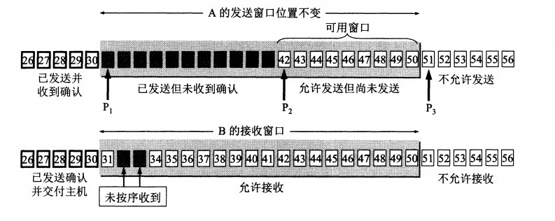
窗口是缓存的一部分，用来暂时存放字节流。发送方和接收方各有一个窗口，接收方通过 TCP 报文段中的窗口字段告诉发送方自己的窗口大小，发送方根据这个值和其它信息设置自己的窗口大小。
发送窗口内的字节都允许被发送，接收窗口内的字节都允许被接收。如果发送窗口左部的字节已经发送并且收到了确认，那么就将发送窗口向右滑动一定距离，直到左部第一个字节不是已发送并且已确认的状态；接收窗口的滑动类似，接收窗口左部字节已经发送确认并交付主机，就向右滑动接收窗口。
接收窗口只会对窗口内最后一个按序到达的字节进行确认，例如接收窗口已经收到的字节为 {31, 32, 34, 35}，其中 {31, 32} 按序到达，而 {34, 35} 就不是，因此只对字节 32 进行确认。发送方得到一个字节的确认之后，就知道这个字节之前的所有字节都已经被接收。
TCP 可靠传输
TCP 使用超时重传来实现可靠传输：如果一个已经发送的报文段在超时时间内没有收到确认，那么就重传这个报文段。
一个报文段从发送再到接收到确认所经过的时间称为往返时间 RTT，加权平均往返时间 RTTs 计算如下：
超时时间 RTO 应该略大于 RRTs，TCP 使用的超时时间计算如下：
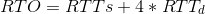
其中 RTTd 为偏差，它与新的 RRT 和 RRTs 有关。
TCP 流量控制
流量控制是为了控制发送方发送速率，保证接收方来得及接收。
接收方发送的确认报文中的窗口字段可以用来控制发送方窗口大小，从而影响发送方的发送速率。例如将窗口字段设置为 0，则发送方不能发送数据。
TCP 拥塞控制
如果网络出现拥塞，分组将会丢失，此时发送方会继续重传，从而导致网络拥塞程度更高。因此当出现拥塞时，应当控制发送方的速率。这一点和流量控制很像，但是出发点不同。流量控制是为了让接收方能来得及接受，而拥塞控制是为了降低整个网络的拥塞程度。
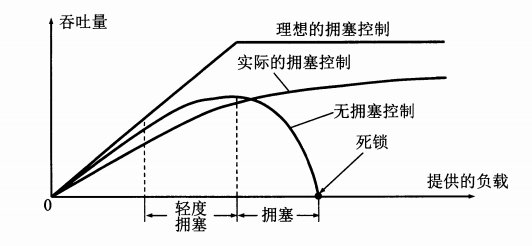
TCP 主要通过四种算法来进行拥塞控制：慢开始、拥塞避免、快重传、快恢复。发送方需要维护有一个叫做拥塞窗口（cwnd）的状态变量。注意拥塞窗口与发送方窗口的区别，拥塞窗口只是一个状态变量，实际决定发送方能发送多少数据的是发送方窗口。
为了便于讨论，做如下假设：
- 接收方有足够大的接收缓存，因此不会发生流量控制；
- 虽然 TCP 的窗口基于字节，但是这里设窗口的大小单位为报文段。
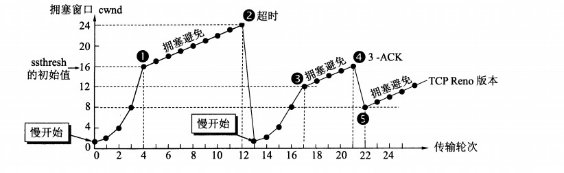
慢开始与拥塞避免
发送的最初执行慢开始，令 cwnd=1，发送方只能发送 1 个报文段；当收到确认后，将 cwnd 加倍，因此之后发送方能够发送的报文段为：2、4、8 ...
注意到慢开始每个轮次都将 cwnd 加倍，这样会让 cwnd 增长速度非常快，从而使得发送方发送的速度增长速度过快，网络拥塞的可能也就更高。设置一个慢开始门限 ssthresh，当 cwnd >= ssthresh 时，进入拥塞避免，每个轮次只将 cwnd 加 1。
如果出现了超时，则令 ssthresh = cwnd / 2，然后重新执行慢开始。
快重传与快恢复
在接收方，要求每次接收到报文段都应该发送对已收到有序报文段的确认，例如已经接收到 M1 和 M2，此时收到 M4，应当发送对 M2 的确认。
在发送方，如果收到三个重复确认，那么可以确认下一个报文段丢失，例如收到三个 M2 ，则 M3 丢失。此时执行快重传，立即重传下一个报文段。
在这种情况下，只是丢失个别报文段，而不是网络拥塞，因此执行快恢复，令 ssthresh = cwnd / 2 ，cwnd = ssthresh，注意到此时直接进入拥塞避免。
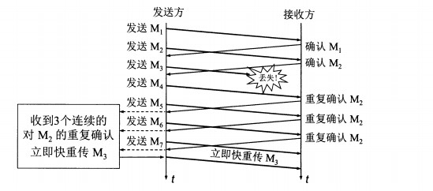
第六章 应用层*
域名系统 DNS
把主机名解析为 IP 地址。
被设计成分布式系统。
1. 层次结构
一个域名由多个层次构成，从上层到下层分别为顶级域名、二级域名、三级域名以及四级域名。所有域名可以画成一颗域名树。

域名服务器可以分为以下四类：
- 根域名服务器：解析顶级域名；
- 顶级域名服务器：解析二级域名；
- 权限域名服务器：解析区内的域名；
- 本地域名服务器：也称为默认域名服务器。可以在其中配置高速缓存。
区和域的概念不同，可以在一个域中划分多个区。图 b 在域 abc.com 中划分了两个区：abc.com 和 y.abc.com
因此就需要两个权限域名服务器：
2. 解析过程
主机向本地域名服务器解析的过程采用递归，而本地域名服务器向其它域名服务器解析可以使用递归和迭代两种方式。
迭代的方式下，本地域名服务器向一个域名服务器解析请求解析之后，结果返回到本地域名服务器，然后本地域名服务器继续向其它域名服务器请求解析；而递归地方式下，结果不是直接返回的，而是继续向前请求解析，最后的结果才会返回。

文件传输协议 FTP
FTP 在运输层使用 TCP，并且需要建立两个并行的 TCP 连接：控制连接和数据连接。控制连接在整个会话期间一直保持打开，而数据连接在数据传送完毕之后就关闭。控制连接使用端口号 21，数据连接使用端口号 20。
远程终端协议 TELNET
TELNET 用于登录到远程主机上，并且远程主机上的输出也会返回。
TELNET 可以适应许多计算机和操作系统的差异，例如不同操作系统系统的换行符定义。
万维网 WWW
电子邮件协议
一个电子邮件系统由三部分组成：用户代理、邮件服务器以及邮件发送协议和读取协议。其中发送协议常用 SMTP，读取协议常用 POP3 和 IMAP。
POP3
POP3 的特点是只要用户从服务器上读取了邮件，就把该邮件删除。
IMAP
IMAP 协议中客户端和服务器上的邮件保持同步，如果不去手动删除邮件，那么服务器上的邮件也不会被删除。IMAP 这种做法可以让用户随时随地去访问服务器上的邮件。IMAP 协议也支持创建自定义的文件夹。
SMTP
SMTP 只能发送 ASCII 码，而互联网邮件扩充 MIME 可以发送二进制文件。MIME 并没有改动或者取代 SMTP，而是增加邮件主题的结构，定义了非 ASCII 码的编码规则。

动态主机配置协议 DHCP
DHCP 提供了即插即用的连网方式，用户不再需要去手动配置 IP 地址等信息。
DHCP 配置的内容不仅是 IP 地址，还包括子网掩码、默认路由器 IP 地址、域名服务器的 IP 地址。
工作方式如下：需要 IP 地址的主机广播发送 DHCP 发现报文（将目的地址置为全 1，即 255.255.255.255:67，源地址设置为全 0，即 0.0.0.0:68），DHCP 服务器收到发现报文之后，则在 IP 地址池中取一个地址，发送 DHCP 提供报文给该主机。
点对点传输 P2P
把某个文件分发的所有对等集合称为一个洪流。文件的数据单元称为文件块，它的大小是固定的。一个新的对等方加入某个洪流，一开始并没有文件块，但是能够从其它对等方中逐渐地下载到一些文件块，与此同时，它也为别的对等方上传一些文件块。
每个洪流都有一个基础设施，称为追踪器。当一个对等方加入洪流时，必须向追踪器登记，并周期性地通知追踪器它仍在洪流中。可以在任何时间加入和退出某个洪流。
一个新的对等方加入洪流时，追踪器会随机从洪流中选择若干个对等方，并让新对等方与这些对等方建立连接，把这些对等方称为相邻对等方。接收和发送文件块都是在相邻对等方中进行。
当一个对等方需要很多文件块时，通过使用最稀有优先的策略来取得文件块，也就是一个文件块在相邻对等方中副本最少，那么就优先请求这个文件块。
当很多对等方向同一个对等方请求文件块时，该对等方优先选择以最高速率向其发送文件块的对等方。
P2P 是一个分布式系统，任何时候都有对等方加入或者退出。使用分布式散列表 DHT，可以查找洪流中的资源和 IP 地址映射。
Web 页面请求过程
-
向 DNS 服务器发送 DNS 查询报文来解析域名。
-
开始进行 HTTP 会话，需要先建立 TCP 连接。
-
在运输层的传输过程中，HTTP 报文被封装进 TCP 中。HTTP 请求报文使用端口号 80，因为服务器监听的是 80 端口。连接建立之后，服务器会随机分配一个端口号给特定的客户端，之后的 TCP 传输都是用这个分配的端口号。
-
在网络层的传输过程中，TCP 报文段会被封装进 IP 分组中，IP 分组经过路由选择，最后到达目的地。
-
在链路层，IP 分组会被封装进 MAC 帧中，IP 地址解析成 MAC 地址需要使用 ARP。
-
客户端发送 HTTP 请求报文，请求获取页面。
-
服务器发送 HTTP 相应报文，客户端从而获取该页面。
- 浏览器得到页面内容之后，解析并渲染，向用户展示页面。
常用端口
| 应用层协议 | 端口号 | 运输层协议 |
|---|---|---|
| DNS | 53 | UDP |
| FTP | 控制连接 21，数据连接 20 | TCP |
| TELNET | 23 | TCP |
| DHCP | 67 68 | UDP |
| HTTP | 80 | TCP |
| SMTP | 25 | TCP |
| POP3 | 110 | TCP |
| IMAP | 143 | TCP |
参考资料
- 计算机网络 第七版
- 计算机网络 自顶向下方法